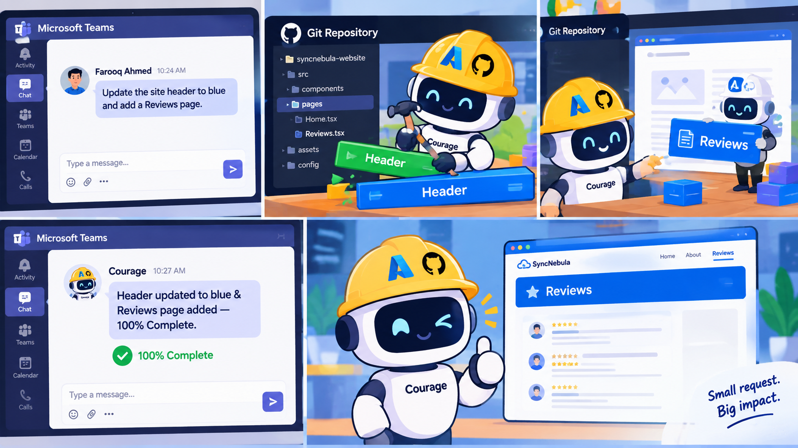

From a Chat Message to a Deployed Pull Request
Most AI coding assistants live inside an editor. You ask, it suggests, you accept or reject. Courage was built to work differently: it lives in a Microsoft Teams chat, and it manages a real, live production website — from understanding a plain-English request, to writing the actual code, to opening a pull request, to merging it once approved.
The goal wasn't a demo. It was a working system for building ITwala Academy's website through conversation alone — "add a testimonials page," "make the heading bold," "lock in this color palette" — and have it genuinely happen, safely, with a human approval step in between.
This is the story of how it was built, what broke, and what those failures taught about building AI systems that take real actions rather than just answering questions.

1. The Core Architecture
Courage is built from a small number of pieces, each with one job:
- Azure Bot Service — the identity that lets Courage exist inside Microsoft Teams.
- Azure Functions — the logic layer: receives messages, decides what to do, replies.
- Azure AI Foundry (GPT-5.5) — the "brain." One model, used consistently for conversation, code generation, and decision-making — deliberately never mixed with a second AI provider.
- Cosmos DB — persistent memory: conversation history, pending approvals, and the locked design system.
- GitHub Actions — the "hands." A workflow that actually checks out the repo, asks the model for a code change, commits it, and opens a pull request.
The flow is simple to describe and surprisingly deep to build correctly:
Teams message → Azure Function → GPT-5.5 decides intent → GitHub Actions workflow → real file edit → pull request → Teams notification → approval → merge → live site.
2. Why Not Just Use an Off-the-Shelf Coding Agent?
GitHub's own Copilot coding agent can already open PRs from an assigned issue. It was tested first — and rejected, for one reason: it uses a different underlying model than the one powering Courage's conversation in Teams. That would mean two different AIs with two different reasoning styles handling the same project, which undermines the entire point of a single, coherent agent.
The same reasoning ruled out the Bot Framework SDK (deprecated) and the newer Teams SDK (built for Express servers, not Azure Functions). The simplest, most controllable path — and the one ultimately used — was a direct REST integration: Courage authenticates with the Bot Framework Connector API and replies with plain HTTP calls, no framework in between.
3. Teaching an LLM to Take Actions, Not Just Talk
The core trick is a structured response format. Instead of free-form text, the system prompt tells GPT-5.5 to respond with an exact machine-readable pattern when a message is a real code request:
TRIGGER_FIX|<short task description>|<comma-separated list of files>The Function checks whether a reply starts with that prefix. If it does, it's parsed and used to call the GitHub Actions API. If not, it's just a normal conversational reply. This one pattern is what turns a chatbot into an agent that can act.
4. The Multi-File Pipeline
The first working version could only edit one file per task. That broke almost immediately — a request like "add a Courses page and link it in the navigation" genuinely needs to touch two files at once, sometimes three.
The fix was to have the GitHub Actions script read every relevant file (treating a missing file as blank, so new pages can be created from nothing), send them all to GPT-5.5 in one request with clear delimiters, and parse a matching multi-file response back — writing each file to its correct path, creating folders as needed.
5. The Hardest Bug: Trusting AI Memory for Exact Values
The most instructive failure in this whole project had nothing to do with infrastructure. It was a design mistake: letting the AI remember and describe a locked color palette in its own words, rather than storing the literal values.
The symptom was a chain of pull requests where Courage confidently reported the wrong colors as "locked in" — because it was reconstructing them from conversation history, and language models paraphrase by nature. Asking it to recall an exact hex code days later is asking it to do something it was never reliable at.
The Fix: Never Let the Model Transcribe Exact Data
The rebuild made a clear rule: anything that has to be
exact — colors, PR numbers, file names — gets
extracted mechanically by code, never generated by the model. A small
function reads the real, merged style.css directly from
GitHub and regex-extracts the CSS variables:
function extractColorVariables(cssText) {
const regex = /--([\w-]+):\s*([^;]+);/g;
const colors = {};
let match;
while ((match = regex.exec(cssText)) !== null) {
colors[match[1].trim()] = match[2].trim();
}
return colors;
}"Lock this in" now means: read PR #N's real file, extract the real values, store them as structured data in Cosmos DB. No paraphrasing, no drift, no hallucinated confirmations.
Lesson: a language model is excellent at understanding intent and terrible at being a database. Anything that must be exact belongs in a database, read fresh every time — not recalled from a conversation.
6. Teaching Courage the Site's Real Structure
A related failure appeared when a new page's navigation link was added inconsistently across the site — correct on the homepage, missing everywhere else — because the model only knew about pages mentioned recently in conversation, not the site's actual file list.
The same principle applied again: stop relying on memory, read the real GitHub repository tree instead.
async function listRepoFiles() {
const url = `https://api.github.com/repos/${owner}/${repo}/git/trees/main?recursive=1`;
const response = await fetch(url, { headers: { Authorization: `Bearer ${token}` } });
const data = await response.json();
return data.tree
.filter(item => item.type === 'blob' && item.path.endsWith('.html'))
.map(item => item.path);
}That real file list is now injected into every request's context, so "make navigation consistent across all pages" means exactly that — every real page, not just the ones recently discussed.
7. Approving Changes in Plain Language
Early versions matched approval phrases with regex — "merge please" worked, "please merge" didn't. That's fragile and doesn't scale to natural conversation, let alone mixed-language phrasing.
The fix, again, was to stop pattern-matching and start asking the
model directly: a small, focused classification call reads the
message and the pending task, and returns exactly one of
APPROVE, DENY, or OTHER — with
explicit instructions that any message containing a new instruction
is always OTHER, regardless of topic overlap with the
pending PR. This correctly handles everything from "yeah go for it"
to "marge karlo bhai" without a single hardcoded phrase.
8. A Genuine Trust Boundary: Preview Before Production
Every change flows through a pull request, never a direct push to
main. Cloudflare Pages automatically builds a preview
deployment for each PR, so a proposed theme or page can be viewed
live before anyone commits to it. Only an explicit approval —
understood in natural language — triggers the merge.
Declining a change doesn't just leave it dangling either: denying a pending PR closes it and deletes its branch automatically, so nothing accumulates as clutter.
9. What Makes This Genuinely Agentic
It's worth being precise about the term. Courage perceives a goal from natural language, decides which files are relevant without being told, calls real external tools (GitHub's API, its own deployment), and operates across a multi-step loop — chat, decide, trigger, edit, open a PR, notify, wait, act on the decision — with a human kept firmly in the approval loop rather than removed from it.
It doesn't yet do deep multi-step planning or self-correction — that remains future work. But by the practical definition of the term, it's a working example of an agent that takes real, consequential actions rather than only producing suggestions.
Conclusion
The recurring lesson across every hard bug in this project was the same one, in different clothes: a language model should reason and understand intent — never be trusted as the system of record for exact facts. Every time that rule was violated, even briefly, it produced confident, plausible, wrong answers. Every time a real, checkable source — the actual merged file, the actual repository tree — replaced AI recall, the system became reliable.
Courage is still growing — image support, full-site "freeze" snapshots, and self-diagnosis of its own infrastructure are next. But the foundation it's built on now is one worth trusting: real data, read fresh, every time.